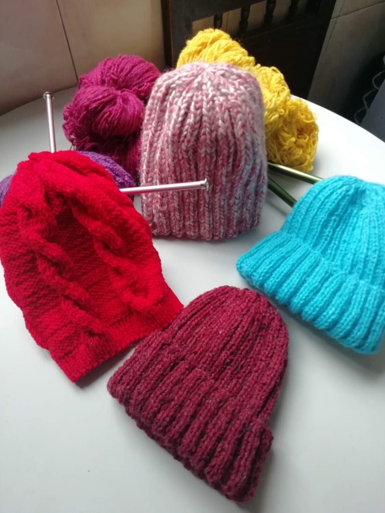
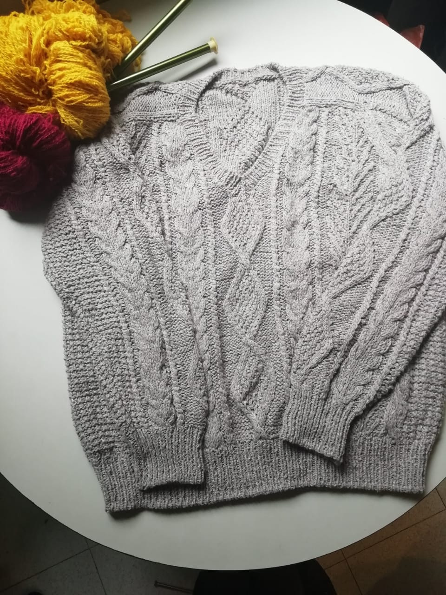
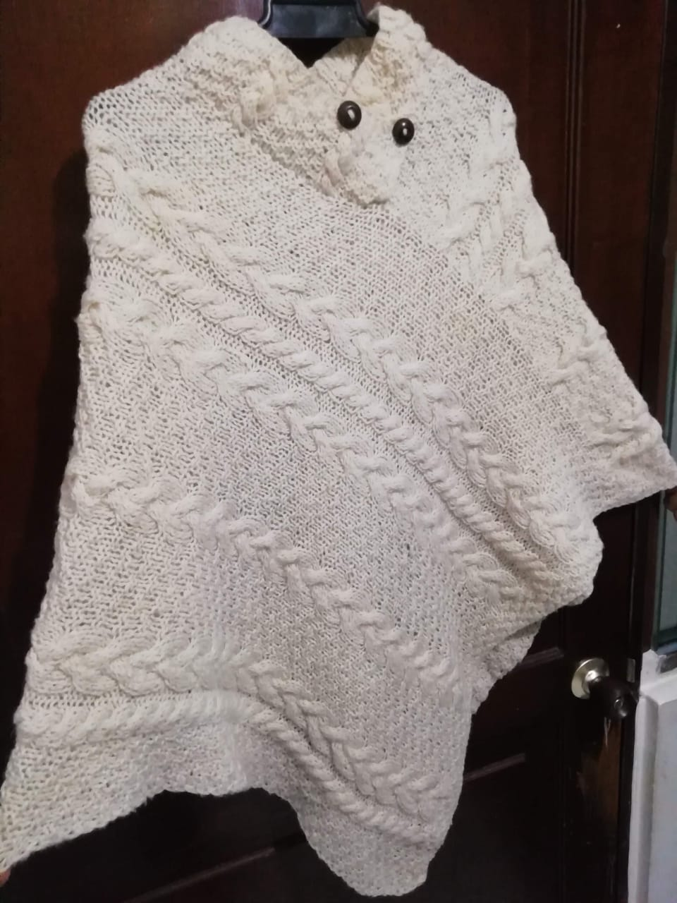
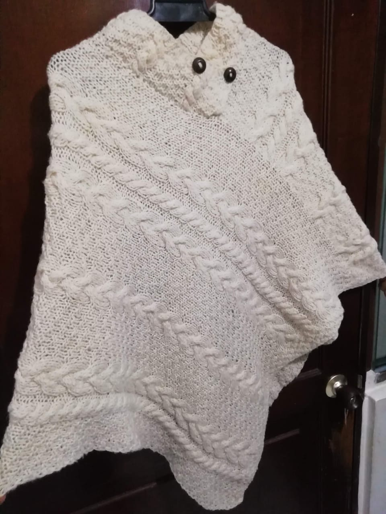
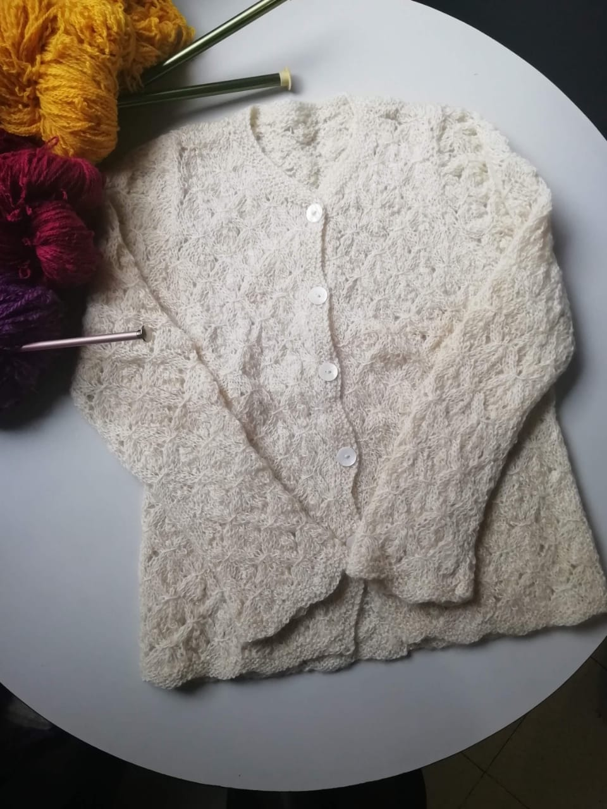
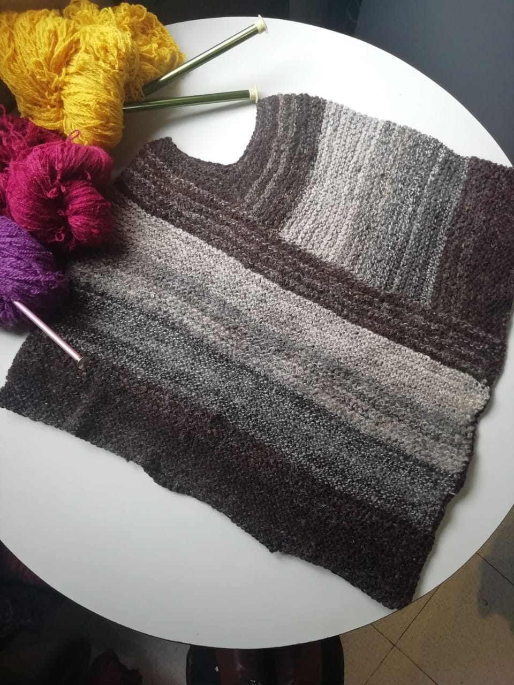

Servicios
Silvia y Leonor Pineda son dos tejedoras tradicionales colombianas, iniciaron actividades desde 1964, a la fecha cuentan con más de 50 años en la tradicion del tejido a mano en lana natural, con varidad de colores, confeccionando sobre medidas con calidad de exportación, creando prendas únicas que perduran en el tiempo y el corazón.
Productos
- Sacos tejidos en dos agujas y en maquina plana
- Abrigos tipo chanel y ruanas
- Gorros bufandas y guantes
- Confeccion sobre medidas y diseños exclusivos


 


